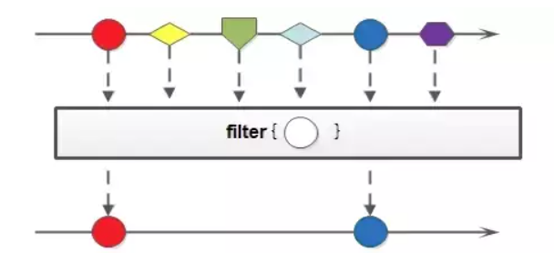

java中的流式编程——Stream API
1 | Stream不是集合元素，它不是数据结构并不保存数据，它更像一个高级版本的 Iterator,单向且不可往复，数据只能遍历一次，遍历过一次后即用尽了，就好比流水从面前流过，一去不复返。 |
流的构成
当我们使用一个流的时候，通常包括三个基本步骤：
- 获取一个数据源（source）
- 数据转换: 执行操作获取想要的结果，每次转换原有 Stream 对象不改变，返回一个新的 Stream 对象（可以有多次转换），这就允许对其操作可以像链一样排列，变成一个管道。
- 终止操作
1、操作的数据源
1 | public static List<Employee> generateListData() { |
2.1、过滤（筛选与切片）
| 方法 | 示意 |
|---|---|
| filter | 接收Lambda表达式，从流中排除某些元素 |
| distinct | 返回包含唯一元素的流（唯一性取决于元素相等的实现方式）,例如通过流所生成元素的 hashCode() 和 equals() 去除重复元素 |
| limit | 截断流，使其元素不超过给定数量 |
| skip | 返回一个丢弃前n个元素的流 |

avatar
1 | /** |
1 | [ |
2.2、映射
| 方法 | 示意 | 应用 |
|---|---|---|
| map | 应用于单个元素，将其映射成新元素（传递一个函数对象作为方法，把流中的元素转换成另一种类型） | map生成的是个一对一映射，比较常用 |
| flatMap | 接收一个函数作为参数，将流中的每个值都换成另一个流，然后把所有流连接成一个流 | flatMap生成一个一对多映射 |

avatar
1 |
|
1 | [Carrie pit, Pat, Tammy, Fred] |
avatar
1 | /** |
1 | map和flatMap的区别：flatMap的可以处理更深层次的数据，入参为多个list，结果可以返回为一个list，而map是一对一的，入参是多个list，结果返回必须是多个list。通俗的说，如果入参都是对象，那么flatMap可以操作对象里面的对象，而map只能操作第一层。 |
3、Collectors（返回流操作完之后的结果）
1 | collect方法是一个结束操作，它可以使流里面的所有元素聚集到汇总结果。传递给collect方法参数是一个java.util.stream.Collector类型的对象。Collector对象实际上定义了一个如何把流中的元素聚集到最终结果的方法。(?).collect(Collectors.?) |
| 方法 | 示意 |
|---|---|
| toList | 转化为List |
| toSet | 转化为Set |
| toMap | 转化为Map |
1 |
|
Optional
1 | Optional类主要解决的问题是臭名昭著的空指针异常（NullPointerException）—— 每个Java程序员都非常了解的异常。 |
| 方法 | 示意 |
|---|---|
| Optional.of(T) | T为非空，否则初始化报错。你应该明确对象T不为null的时候使用 of() |
| Optional.ofNullable(T) | T为任意，可以为空。如果对象T即可能是null也可能是非null,你就应该使用ofNullable()方法： |
| isPresent() | 等价于 !=null |
| ifPresent(T) | T可以是一段lambda表达式 ，或者其他代码，非空则执行 |
1 |
|